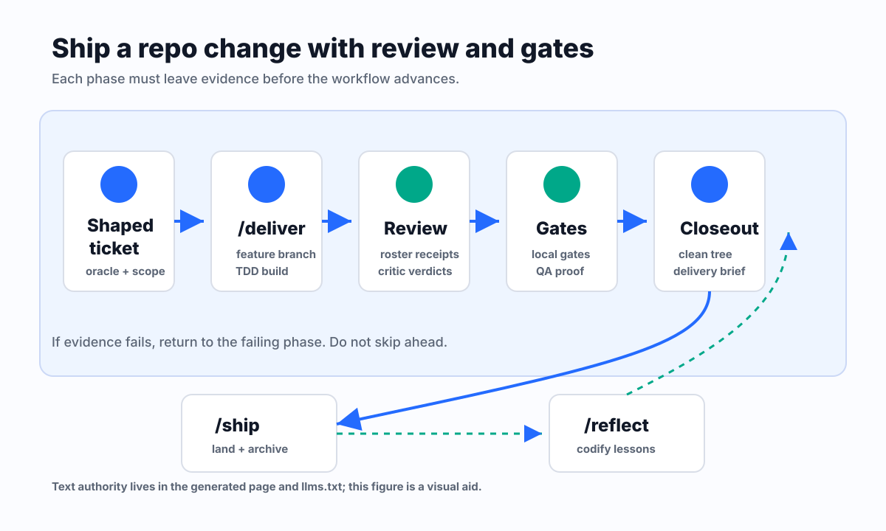

Ship a repo change with review and gates
Use the inner loop to turn a shaped ticket into merge-ready work.
Source: skills/deliver/SKILL.md
Input
A shaped backlog item with concrete oracle and implementation surface.
Decision
Let implementation, review, CI, refactor, and QA each own their part of the evidence loop.
Evidence
Green gate output, review receipts, QA evidence, clean tree, and a delivery brief.
Failure handling
If any phase cannot produce live evidence, the branch is not merge-ready.

Text equivalent: ship workflow evidence loop
- Start from a shaped ticket with a concrete oracle and implementation surface.
- Use /deliver to build on a feature branch while implementation, review, CI, refactor, and QA each own separate evidence.
- Collect roster receipts, green gate output, QA evidence, and clean-tree status before calling the branch merge-ready.
- Use /ship only after merge-readiness: land the work, archive the backlog item with trailers, sync generated docs, and run reflection.
- If any phase cannot produce live evidence, route back to the failing phase instead of treating the branch as shipped.
Committed static SVG source; CI copies bytes and never calls an image-generation API. Regeneration: Prompt: draw a clean workflow map for Harness Kit showing shaped ticket, /deliver, review lanes, CI gates, QA evidence, clean-tree closeout, /ship, and /reflect. Current OpenAI image-generation docs verified on 2026-06-03: https://platform.openai.com/docs/guides/image-generation/
What to verify
- The input exists in live evidence.
- The decision has an oracle.
- The evidence path is captured before closeout.